ארץ ישראל
חיבת הארץ, נטיעת אילנות, בית בארץ ישראל והלכות חיבת הארץ
55 פריטים
בית בארץ ישראל – המדריך לקניית בית (18)
בית בארץ ישראל
ואופן קניתו הספר שילמד אותך - כיצד קונים בשמחה בית קרא עוד הסכמות גדולי ישראל קרא עוד כתבות בעיתונים יתד, המוד…
טובה הארץ – מאוד מאוד
טובה הארץ - מאוד מאוד המדריך המקיף בנושא בנית בית בארץ ישראל ואופן קניתו מה מכיל הספר? ומה תוכנו? קרא עוד בית …
טובה הארץ - מאוד מאוד
המדריך המקיף בנושא בנית בית בארץ ישראל ואופן קניתו מה מכיל הספר? ומה תוכנו? קרא עוד בית ראובן - המדריך לקנית ב…

חנוכת הבית, קנית בית בארץ ישראל, אתחלתא דגאולה
ספר המדריך המקיף לקנית בית בקדושה ובשמחה ונטעתם - מצוות נטיעת אילנות בארץ ישראל ספר על המצווה לטעת אילנות ופרח…
המדריך המקיף בנושא בנית בית בארץ ישראל ואופן קניתו
הספר שילמד אותך - כיצד קונים בשמחה בית מה זה הספר בית ראובן? בית ראובן - הוא מדריך לקנית בית - בשמחה ספר חדש ר…
הסכמות גדולי ישראל
לראות עוד הסכמות נלהבות של פוסקים רבנים ודינים - לחצו כאן האדמו"ר ממאקווא שליט"א ביחד עם הרב המחבר בנוגע לאחד …
כתבות בעיתונים
יתד, המודיע, קול ברמה, גמ"ח המרכזי כתבות על הספר והמחבר בעיתונים החרדים - כתבה ביתד נאמן על הספר בית ראובן כתב…
המלצות קוראים וקוראים כותבים
עדויות משתמשים מספר הרב שמואל פולק – מחיפה שנים חיפשתי דירה בחיפה, כל פעם זה לא הצליח, או לא היה לי את האומץ ל…
כיצד נוצר הספר - הסיפור מאחורי הקלעים
מרכיבי המוצר ייעוד: הספר מיועד בעיקר לאברכים שרוצים להבין היטיב את המצווה שיש בקנית בית בארץ ישראל. גם אנשים ע…

המדריך לקנית בית
מה נלמד בספר מה נלמד בחוברת? את הנושא הזה אני מאוד רוצה להכניס לציבור בני התורה להבין על איזה מצווה מדובר כאן?…

תקציר הספר להורדה בחינם
הדובדבן! ידידי היקר! רוצה לטעום קצת מהטעם המתוק של קנית בית בארץ ישראל? הנה לפניך דובדבן קטן מהספר, דובדבן קטן…
סגולה לקנית דירה בקלות
ידוע מה שאומר ר' חיים קניבסקי שליט''א, שלימוד על נושא הקשור לדבר שבו זקוקים לישועה, הוא סגולה גדולה. לדוגמא: מ…
מגנט מתנה
מגנט לתליה על הדלת - מתנה לכל קונה הפני יהושע מקשה: כיצד אומרת הגמ' במסכת כתובות (דף קיא עמוד א): "אמר רבי אלע…
בית ראובן - המדריך לקנית בית
הסכמות גדול ישראל לראות עוד הסכמות נלהבות של פוסקים רבנים ודינים - לחצו כאן האדמו"ר ממאקווא שליט"א ביחד עם הרב…
המדריך לקנית בית בשמחה
המלצות קוראים וקוראים כותבים עדויות משתמשים מספר הרב שמואל פולק – מחיפה שנים חיפשתי דירה בחיפה, כל פעם זה לא ה…
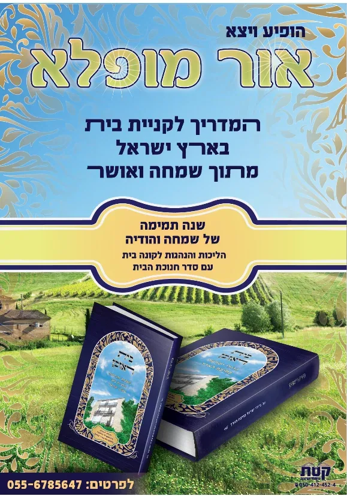
המדריך המקיף לקנית בית
כיצד נוצר הספר - הסיפור מאחורי הקלעים מרכיבי המוצר ייעוד: הספר מיועד בעיקר לאברכים שרוצים להבין היטיב את המצוו…
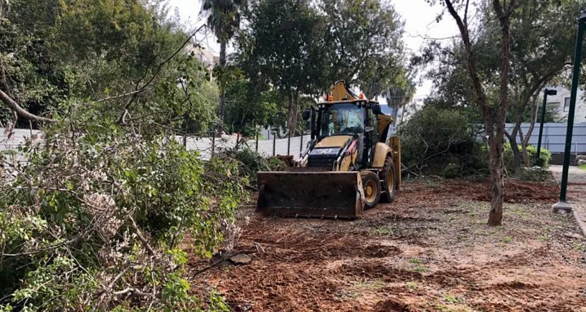
כיצד נוצר הספר?
היה זה בערך בשנת תשע"ו. כאשר שברו את הבית הישן ובנו לידי בית חדש, תוך כדי העבודה, בשביל לעשות גדר מאבן בין החצ…
בית ראובן
המדריך לקנית בית מתוך שמחה של מצוה הלכות, הנהגות ועובדות מגדולי ישראל על המצווה שמן הסתם תהיה היקרה ביותר מבין…
ונטעתם – נטיעת אילנות (5)
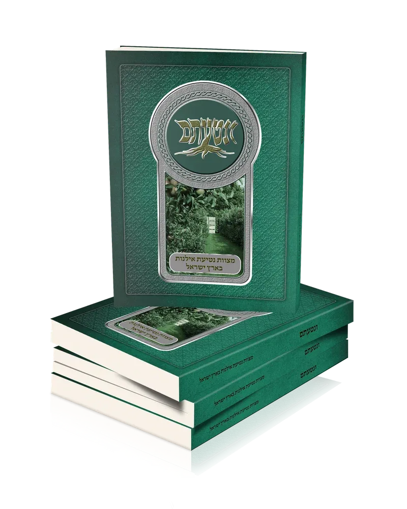
נטיעת אילנות
ונטעתם - מצוות נטיעת אילנות בארץ ישראל ספר על המצווה לטעת אילנות ופרחים בארץ הקודש קרא עוד קוראים מספרים על הס…
ונטעתם - מצוות נטיעת אילנות בארץ ישראל
ספר על המצווה לטעת אילנות ופרחים בארץ הקודש בשורה טובה לקהל לקוחותינו בהמשך לספר על המצווה לבנות בית בארץ ישרא…
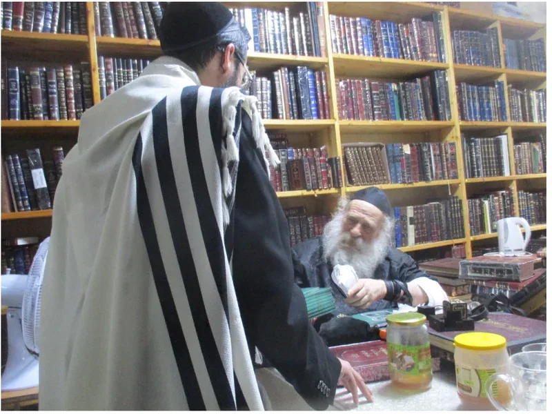
קוראים מספרים על הספר
ביום שני ז' אייר תשפ"א נכנסתי לפני כ"ק האדמו"ר ממאקווא שליט"א והראתי לו את החוברת שהוצאנו – ונטעתם – מצוות נטי…
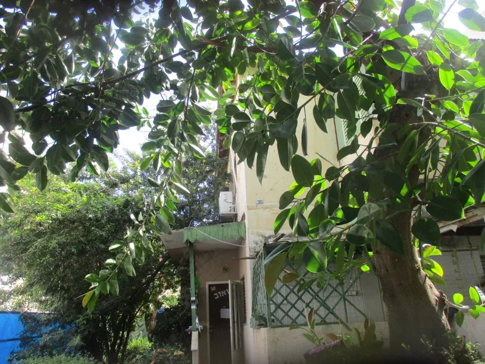
ונטעתם - סיפורו של ספר
את הספר הוצאתי לע"נ סבי ר' מאיר שפריר ז"ל שעלה לארץ לאחר השואה, וזכה להיות מן המעפילים. וכשזכה בחסדי הבורא להג…
ונטעתם - מצוות נטיעת אילנות
קוראים מספרים על הספר ביום שני ז' אייר תשפ"א נכנסתי לפני כ"ק האדמו"ר ממאקווא שליט"א והראתי לו את החוברת שהוצאנ…
חיבת הארץ (4)

חיבת הארץ
ספר נפלא הליכות וסיפורים באהבת הארץ קרא עוד סוד חלוקת ארץ ישראל ליוצאי מצרים פרדוקס מדהים: בחלוקת ארץ ישראל "מ…
ספרי טובה הארץ - מאוד מאוד
לקט ספרים פלקטים ומגנטים קרא עוד

סוד חלוקת ארץ ישראל ליוצאי מצרים
פרדוקס מדהים: בחלוקת ארץ ישראל "מתים יורשים את החיים" - הארץ מתחלקת ליוצאי מצרים שמתו במדבר. למה? בנות צלפחד ח…
לקט ספרים פלקטים ומגנטים
הלכות דיבת הארץ חשון.pdf פלקט לתליה על המזגן
הלכות חיבת הארץ (25)
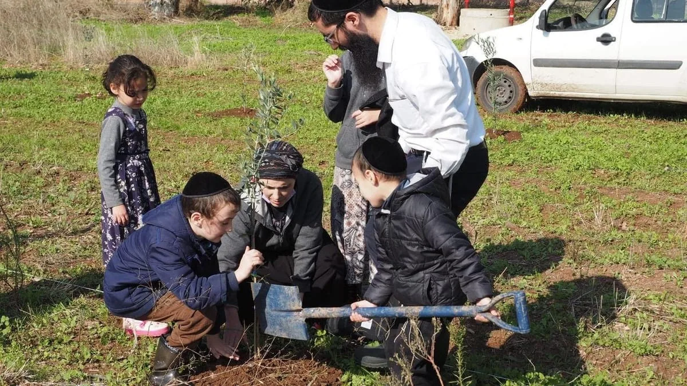
הלכות דיבת הארץ
הלכות חיבת הארץ מסירות נפש למען ארץ ישראל קרא עוד טיול בארץ ישראל קרא עוד ארבע אמות חדשות קרא עוד אכילת פירותי…
הלכות חיבת הארץ
מסירות נפש למען ארץ ישראל קרא עוד טיול בארץ ישראל קרא עוד ארבע אמות חדשות קרא עוד אכילת פירותיה קרא עוד נטיעת …
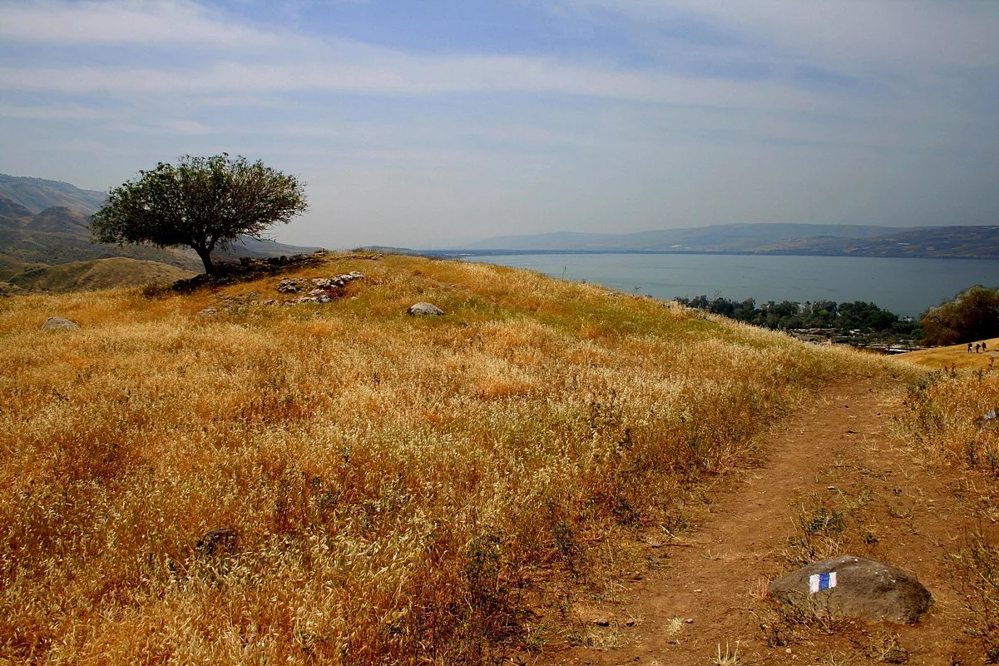
מסירות נפש למען ארץ ישראל
כתב החתם סופר (תורת משה שלח): המבין ויורד בדעתו לסוף קדושת א"י וקדושת נפשו, ימסור נפשו וכל הונו רק לעלות ולראו…
טיול בארץ ישראל
הבן איש חי כתב [1] שיש מצווה ללכת לטייל בארץ ישראל למקום שיש בו פרדסים ונמצאים שם פירות חשובים טובים ומתוקים ו…

ארבע אמות חדשות
ישנה ציטטה השגורה בפי הבריות - "ארבע אמות חדשות בארץ ישראל", שכביכול המצווה ללכת בארץ ישראל אינה מתקיימת אלא ב…
אכילת פירותיה
מצווה להעדיף פירות מגידולי ארץ ישראל על פני פירות חוץ לארץ משום: א.חיבת הארץ (ק"ו מהמצווה לנשק את עפרה). ב. מש…
נטיעת עצים בארץ ישראל
מצווה על כל אדם להשתדל ולטעת עצים בעצמו בארץ ישראל כמו שמסופר בגמ' (ב"ב יד, א) בשבחו של האמורא ר' ינאי, שנטע א…
מצוות נטיעת עצים
כל נטיעה בארץ ישראל היא מצווה (כמובא בחתם סופר סוכה לו). אמנם בנטיעת עצים יש בזה מצווה במיוחד, היות ויש מצווה …
לטעת עץ בידים
שנינו בממסכת שבת (כב, א) לגבי מצוות כיסוי הדם: "תניא: ושפך וכסה - במה ששפך (בידו) יכסה, שלא יכסנו ברגל, שלא יה…

קנית קרקע בארץ ישראל
חלק חשוב בחיבת הארץ היא המצווה לקנות קרקע בארץ ישראל. ומצאנו בתורה כמה מקורות לכך. מעשה אבות לימוד לבנים: התור…
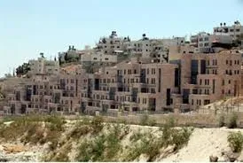
קנית בית בארץ ישראל
בניית בית בארץ ישראל היא מצווה מהתורה חלק ממצוות יישוב ארץ ישראל. גם המרחיב את ביתו הקיים, מקיים מצווה זו. וצר…
שנת שמחה לבונה בית
נאמר בתורה (דברים כ, ה): "מִי הָאִישׁ אֲשֶׁר בָּנָה בַיִת חָדָשׁ וְלֹא חֲנָכוֹ יֵלֵךְ וְיָשֹׁב לְבֵיתוֹ פֶּן י…
לא למכור בית בא"י
נשאל הרב יצחק זילברשטיין שליט''א: במסגרת חיפושי אחרי דירה, הציעו לי דירה שמאד מתאימה לי, וגם המחיר מאד נח, אפי…
ארץ ישראל יפה
הגמרא (כתובות קי"ב ע"ב) מספרת רבי חנינא מתקן מתקליה פירש רש"י משוה ומתקן מכשולי העיר מחמת חיבת הארץ שהיתה חביב…
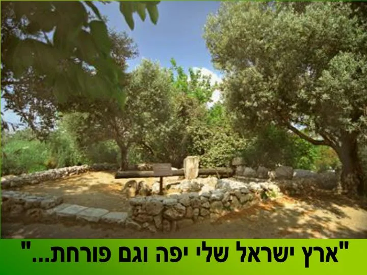
תפארתה של ארץ ישראל
חכמינו תקנו תקנות רבות משום תפארת ארץ ישראל כדי להבטיח את היופי החיצוני של הערים בארץ ישראל. בזמן שעם ישראל זו…
דירה נאה בארץ ישראל
היו מגדולי ישראל שאף שבחו"ל היו מסתפקים בדירה פשוטה בתכלית הפשטות [1], בארץ ישראל קנו דירה נאה ויפה משום זה אל…
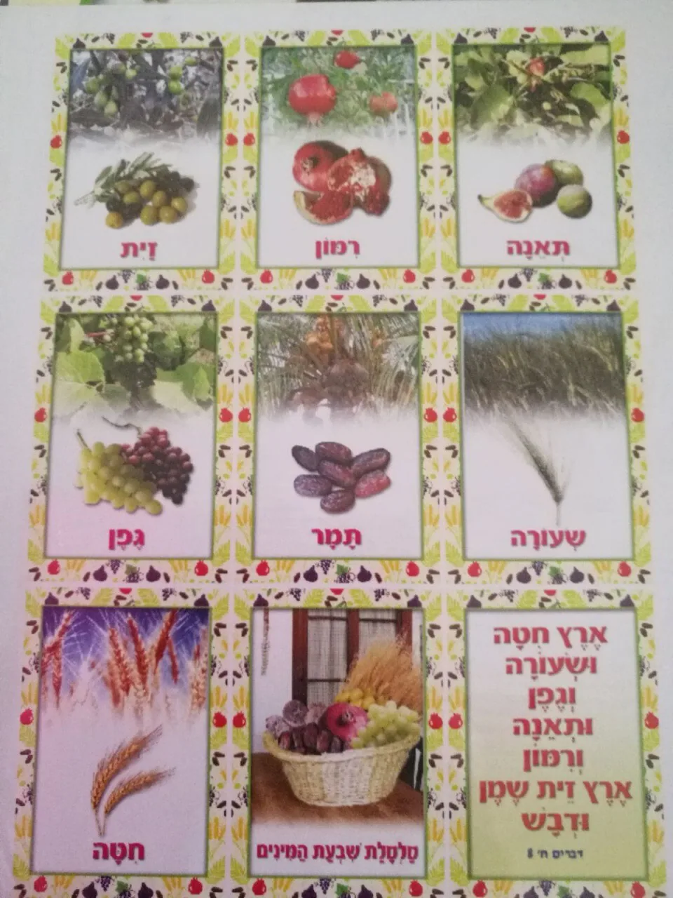
כבוד הארץ
ראוי לאדם לעשות פעולות ומעשים שיגרמו לו להרגיש את כבוד ארץ ישראל. כמו שכתב החינוך (מצווה תקסח) בטעם המצווה: של…
להודות על הזכות - לגור בא''י
אמר הרב דב יפה זצ"ל: מצוות ישוב א"י היא בכל עת ורגע שנמצאים בה, וחבל הדבר שישנם הנמצאים בארץ הק' רק כ'מתעסק', …
להודות על מעלותיה
תניא, רבי אליעזר אומר: כל שלא אמר ארץ חמדה טובה ורחבה, בברכת הארץ - לא יצא ידי חובתו (גמ' ברכות מח, ב). בברכת …

לדאוג שאחרים יאהבו
בגמ' יומא (פו,א) אמרו ואהבת את ה' שיהא שם שמים מתאהב על ידך, וכתב הרמב"ם [1] שאהבה מחייבת לעשות שיאהבוהו גם אח…
שירי ארץ חמדה
רבי אלעזר אזכרי, בעל ספר חרדים' מספר בספרו [1] על מנהג יפה שהיה להם, להתכנס בכל ערב ראש חודש בקברו של ר' יהודה…
שמחה בישיבה
כתב בספר חרדים [1] : מצות ישיבת א"י. כל עת ורגע שהאדם בא"י הוא מקיים המצוה זו וידוע שעיקר שכר המצוה על השמחה ג…
כל יום כחדשה
מהכתוב (שמות יג): "וְהָיָה כִּי יְבִאֲךָ ה' אֶל אֶרֶץ הַכְּנַעֲנִי כַּאֲשֶׁר נִשְׁבַּע לְךָ וְלַאֲבֹתֶיךָ וּנְ…
להתענג מארץ ישראל
מסופר בגמ': "ר' אמי ורבי אסי קיימי משמשא לטולא ומטולא לשמשא". (גמ' כתובות קיב, א) באור: רבי אמי ורבי אסי היו ק…
לנהוג קדושה באדמתה
בספר 'חשוקי חמד' (כתובות עמ' תרסד). מובא בשם הגר"י זילברשטיין: "שמעתי שהיו צדיקים שלא ירקו על אדמת ארץ ישראל מ…
מאמרים וחומרים על ארץ ישראל (3)
חומר על חברת יישוב ארץ ישראל
חברת יישוב ארץ ישראל הורד קובץ PDF • 1769KB הורד קובץ PDF • 549KB הורד קובץ PDF • 352KB הורד קובץ MP3 • 2005…
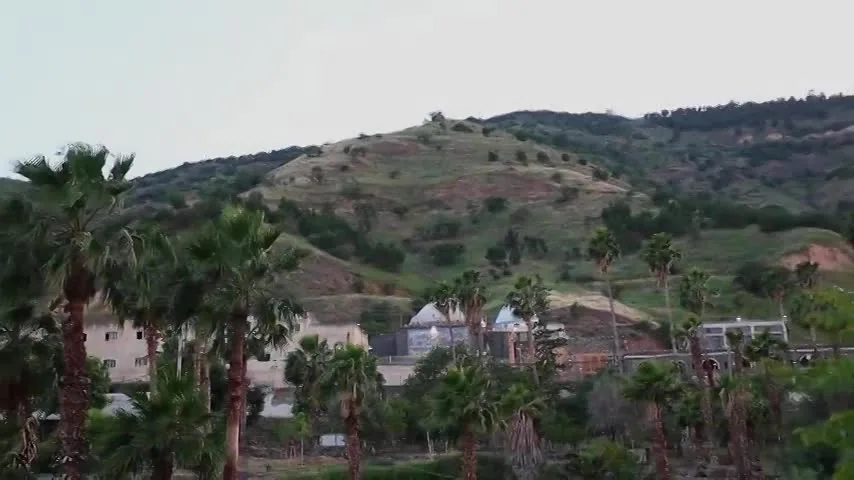
סיפור עלית רבי מנחם מנדל מויטבסק ועלית תלמידי הבעל שם טוב
הורד קובץ MP4 • 0KB עמדות לעולם אודך ברחבי הארץ קטלוגים של המוצרים אנו מודים לך על התשלום הערות
מאמרים על ארץ ישראל
לחץ כאן לקבלת קונטרס עם למעלה ממאה וחמישים ליקוטים מספרי המשגיח הגה"צ רבי יחזקאל לוינשטיין בעניני ארץ ישראל קץ…